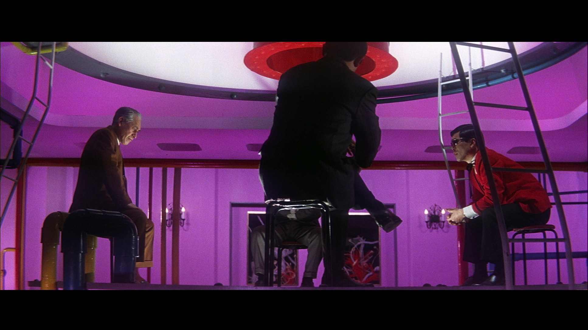

Requirements

The syllabus is in flux. Check here for most recent updates. Any printout is likely already out of date.
Updated Friday, January 16, 2015
Spring 2015 JAPNS121
Requirements
Grade Breakdown
Attendance and Participation (5pts)
Pop Quizzes (5pts)
Four Experiments (20pts)
Film Terms Quiz (10pts)
Presentation (20pts)
Take Home MidTerm (20pts)
Final Paper (20pts)

Requirements
In lieu of book purchases, Students should subscribe to Hulu plus where they can stream many classics of Japanese film. If for some reason (cost or access to a computer with a healthy internet connection) subscription is impractical, students may fulfill the viewing assignments from DVDs in the PSU media center.
Attendance/participation:
5 points
The part of your grade that makes all others easy is attendance and participation. If you come to screenings, lectures, and discussion sections, you will go a long way towards knowing and understanding the material. Although films will be on reserve at the library, attendance at at least twelve of the film screenings is required for your participation in the course.
Attendance and participation will be assessed through PollEverywhere at screenings, lectures, and discussion sections. Bring your phone, laptop, or net-device with you to every class.
PollEverywhere is a response system that allows you to respond to questions I pose during class, and you will be graded on that feedback and/or your in-class participation. In order to receive this credit, you will need to register for PollEverywhere online within the first TWO WEEKS of class. You must have come to class at least once and voted on at least one question in order to complete this registration properly. Complete Registration here.
Pop Quizzes:
5 points
Pop quizzes may be given at anytime throughout the semester on a given week’s readings or films. Quizzes will be given when only a few students are participating in discussion or when it appears only a few students have completed the reading or screening assignments for the week.
A student’s lowest 1/3 of scores will be dropped before the pop quiz average is derived and entered into your final grade. Since one third of the quizzes may be dropped there will be no make up quizzes for lateness or absentee-ism.
All quizzes will be administered through the PollEverywhere system. Yet another good reason not to ever for get your device.
4 Experiments in Media:
20 points
Throughout the semester we will have four assignments in which students will actively apply the knowledge they have learned to various media. Descriptions of each project will be posted to the Docs page.
1. Para/photograph -- Writing with light and words…
Due Jan. 29, 2015
2. Editing — Choose a Youtube clip and describe....
Due Feb. 5, 2015
3. Theater in a box — In your home vs. in your theater...
Due February 26, 2015
4. Cell/cel/Net — Choose your own experiment....
Due March 19, 2015
Quiz on Japanese/Film Terms:
10 points
FEBRUARY 24th. There will be no make up quizzes given; instead students unable to take the quiz are encouraged to avail themselves of the bonus opportunities provided in the four experiment assignments.
Presentation on alternate films:
20 points
Groups of 3-5 students will present independent research on a films related to the film or films of the week of their presentation. For further explanations of the assignment a document will be available on the DOCS page. Presentations will happen during Thursday class sessions beginning in the fifth week of class. Students must sign up by the third week of class for a group. Groups must obtain approval for their proposed content from their instructor or TA by two weeks prior to their presentation date. Presentations shall take no more than 20 minutes total. Sign up here.
Take Home Mid-Term:
20 points submit answers to Angel Dropbox DUE Feb 24th
5 Identification and significance topics. 10% each.
1 essays (choose from three). 50%.
Final PAPER:
20 points
Your final paper will be due in four stages: Thesis, Intro/Outline, Rough Draft, Final. Each stage is worth 5 points.
Thesis 5pts
Due MARCH 3
1-3 sentences submit to Angel Dropbox
Intro paragraph and Outline 5pts
Due APRIL 7
1pg submit to Angel Dropbox
Rough 5pts
Due APRIL 27
3-5 pages submit to Angel Dropbox
Final 5pts
Due MAY 11
5-7 pages submit to Angel Dropbox

Evaluation
Grading Scale
A 93 and above
A- 90-92
B+ 87-89
B 83-86
B- 80-82
C+ 76-79
C 70-75
D 60-69
F 59 and below
Evaluation Guidelines for Attendance & Participation
90-100 % Student is well prepared, as demonstrated by her/his critical response papers and comments made in class; is interested in and respects others‘ opinions; asks and responds to questions; demonstrates knowledge of course materials; fosters a vibrant intellectual community.
80-89 % Student is generally prepared, makes an effort to refer to readings and course topics; is willing to participate in discussions in class.
70-79 % Student reluctantly participates in class activities and is often unprepared; rarely practices critical thinking; does not demonstrate sufficient knowledge of course materials.
60-69 % Student is unwilling to participate in class activities and unable to ask or answer questions; is generally unprepared; demonstrates little knowledge of course materials.
0-59 % Student is absent (physically or mentally), unprepared, or disruptive in class.
University Policy
Expectations for Classroom Behavior
Civil behaviors are expected in the classroom. Do not use computer for activities unrelated to the class. Do not use your cell phone in class. Penn State Code of Conduct (http://www.sa.psu.edu/ja/conduct.shtml) prohibits "obstruction or disruption of classes‖ (Policy Statement 1). Disruption is defined as ―an action or combination of actions by one or more individuals that unreasonably interferes with, hinders, obstructs, or prevents the operation of the University or infringes on the rights of others to freely participate in its programs and services." Course instructors have the authority to request that a disruptive student leave a class for the remainder of the period. Examples of disruptive behavior include: inappropriate in-class behavior including harassing other students/faculty members, constant interruptions, and the like. Cases of disruptive behaviors will be referred to the Associate Director of Student Affairs for judicial action. Sanctions may include moving the student to another section of the course or administrative removal from the course resulting in a grade of F. Students can direct any questions or concerns they have with the standards of behavior policy to the Associate Director of Judicial Affairs (1-814-863-0342).
Academic Integrity
Dishonesty of any kind will not be tolerated in this course. Dishonesty includes, but is not limited to, cheating, plagiarizing, fabricating information, facilitating acts of academic dishonesty by others, having unauthorized possession of exams, submitting work of another person or work previously used without informing the instructor, or tampering with the academic work of other students. Students who are found to be dishonest will receive academic sanctions and will be reported to the University‘s Judicial Affairs office for possible further disciplinary sanctions. Penn State defines academic integrity as the pursuit of scholarly activity in an open, honest and responsible manner. All students should act with personal integrity, respect other students‘ dignity, rights and property, and help create and maintain an environment in which all can succeed through the fruits of their efforts (Faculty Senate Policy 49-20). Possible academic sanctions include reduced course grade to F for course. In addition, there are disciplinary sanctions that may include the XF grade and permanent expulsion.
Access Statement
The Penn State University encourages qualified students with disabilities to participate in its programs and activities. If you anticipate needing any kind of accommodation in this course or have any questions about physical access, please tell the instructor as soon as possible. For more information, visit: http://www.equity.psu.edu/ods/student/confidential_release.asp
Registration Policy
During the drop/add period at the beginning of the semester, the Department of Comparative Literature encourages students to visit all courses in order to make an informative judgment about which ones to take. After the first week, however, only students registered in the course may remain. Any late-add (or reenrollment of a dropped registration) after the third week of the semester has to be petitioned to the department on a form available in the office, 427 Burrowes.